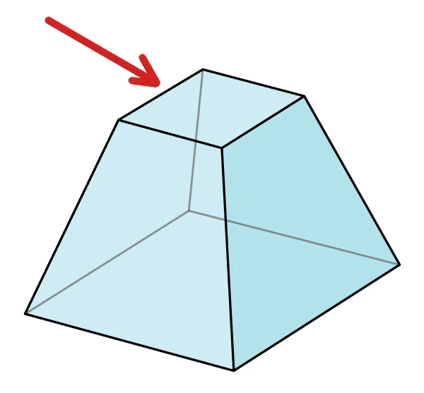

| 4.2 |
QUESTIONER:
Does the shape of the pyramid have effect upon the initiation? |
|
Собеседник:Влияет ли форма пирамиды на посвящение?
|
|
RA:
I am Ra. As we began the last session question, you have already
recorded in your individual memory complex the first use of the shape
having to do with the body complex initiation. The initiation of spirit
was a more carefully designed type of initiation as regards the time/space
ratios about which the entity to be initiated found itself.
If you will picture with me the side of the so-called pyramid shape and
mentally imagine this triangle cut into four equal triangles, you will find
the intersection of the triangle which is at the first level on each of the
four sides forms a diamond in a plane which is horizontal. The middle of
this plane is the appropriate place for the intersection of the energies
streaming from the infinite dimensions and the mind/body/spirit
complex’s various interwoven energy fields.
Thus it was designed that the one to be initiated would, by mind, be able
to perceive and then channel this, shall we say, gateway to intelligent
infinity. This, then, was the second point of designing this specific shape.
May we provide a further description of any kind to your query?
|
|
Ра: Я есмь Ра. Когда мы начали вопрос прошлого сеанса, ты уже записал
в свой индивидуальный комплекс памяти первое использование формы связанной с
посвящением комплекса тела. Инициация духа была более бережно продуманным
типом посвящения касательно пропорций времени/пространства в которых находилось
существо проходящее посвящение.
Если вместе со мной представишь себе сторону
(т.е. треугольник, примеч.пер.) так называемой формы пирамиды и
мысленно представишь себе этот треугольник поделенным на четыре одинаковых
треугольника ты найдёшь пересечение треугольника который на первом уровне на каждой
из четырех сторон создаёт алмаз в горизонтальном плане. Середина этого плана
надлежащее место пересечения энергий втекающих из бесконечных измерений и из
взаимопроникающихся энергетических полей комплекса ума/тела/духа.
Получающийся "алмаз" о котором говорит Ра, это верхний квадрат на
этом рисунке. Деление каждой стороны пирамиды (треугольника) на 4 треугольника не показано, примеч.пер:

Таким образом было предназначено что тот кто должен был пройти посвящение, должен
при помощи ума быть в состоянии воспринимать и потом канализировать эти, так сказать,
ворота в разумную бесконечность. Это была вторая причина разработки конкретно этой
формы. Можем ли мы предоставить ещё какое-то описание на твой вопрос?
|
| 4.5 |
QUESTIONER:
Is the size of the pyramid a function in effectiveness of the initiation?
|
|
Собеседник: Играет ли роль размер пирамиды на эффективность посвящения?
|
|
RA: I am Ra. Each size pyramid has its own point of streaming in of
intelligent infinity. Thus a tiny pyramid that can be placed below a body,
or above a body, will have specific and various effects depending upon the
placement of the body in relationship to the entrance point of intelligent
infinity.
For the purposes of initiation, the size needed to be large enough to create
the expression of towering size so that the entrance point of multi-
dimensional intelligent infinity would completely pervade and fill the
channel, the entire body being able to rest in this focused area.
Furthermore, it was necessary for healing purposes that both channel and
the one to be healed be able to rest within that focused point.
|
|
Ра: Я есмь Ра. Размер каждой пирамиды имеет свою собственную точку втекания
разумной бесконечности. Таким образом маленькая пирамида которая может быть
поставлена ниже тела, или выше тела, будет иметь специфические и разные эффекты
в зависимости от нахождения тела по отношению к точке вхождения разумной бесконечности.
Что касается посвящения, размер должен был быть достаточно большой чтобы создать
эффект возвышающегося размера чтобы точка входа разумной бесконечности из мульти
измерений полностью охватывала и заполняла канал (т.е. человека,
примеч.пер.), чтобы всё тело могло отдыхать в этой точке фокуса.
Более того, для исцеления было необходимо чтобы канал и тот кого надо было исцелить
оба могли находится (Ра использует слово "отдыхать", примеч.пер.)
в пределах этой точки фокуса.
|
| 4.6 |
QUESTIONER:
Is the large pyramid at Giza still usable for this purpose, or is
it no longer functioning?
|
|
Собеседник: Можно ли использовать большую пирамиду в Гизе для этих целей, или она больше
не работает?
|
|
RA:
I am Ra. That, like many other pyramid structures, is like the piano
out of tune: it, as this instrument would express, plays the tune, but oh so
poorly. The disharmony jangles the sensitive. Only the ghost of the
streaming still remains due to the shifting of the streaming points which
is, in turn, due to the shifting electromagnetic field of your planet; due
also to the discordant vibratory complexes of those who have used the
initiatory and healing place for less compassionate purposes.
|
|
Ра: Я есмь Ра. Эта пирамида, также как и другие похожие структуры, как
расстроенное пианино: она, как сказал бы этот инструмент, играет музыку но очень плохо.
Диссонанс режет слух чувствительному человеку. Остаётся только призрак потока из-за
сдвига точек втекания которое произошло в свою очередь из-за сдвига электромагнитного
поля вашей планеты; частично также из-за негармоничных вибрационных комплексов
тех кто использовали место посвящения и исцеления для менее чем сострадательных
целей (т.е. использовали не во благо, не по Закону Одного,
примеч.пер.).
|
| 4.7 |
QUESTIONER:
Would it be possible to build a pyramid and properly align it
and use it today with materials we have available?
|
|
Собеседник:Возможно ли построить пирамиду и выровнять ее должным образом и использовать
её в наши дни из материалов которые нам доступны?
|
|
RA: I am Ra. It is quite possible for you to build a pyramid structure. The
material used is not critical, merely the ratios of time/space complexes.
However, the use of the structure for initiation and healing depends
completely upon the inner disciplines of the channels attempting such
work.
|
|
Ра: Я есмь Ра. Вполне возможно для вас построить пирамиду. Используемый материал
не критичен, только пропорции комплексов времени/пространства. Однако, использование
структуры для посвящения и исцеления зависит полностью от внутренней дисциплины
каналов которые попробуют взять на себя такую работу.
|
| 4.8 |
QUESTIONER:
My question then would be, are there individuals incarnate
upon the planet today who would have the necessary inner disciplines to,
using your instructions, construct and initiate in a pyramid they built and
then possibly do it again? Is this within limits of what anyone can do on
the planet today, or is there no one available for this?
|
|
Собеседник: Мой вопрос наверное, есть ли сегодня воплощенные индивидуумы на планете
у которых была бы нужная внутренняя дисциплина для того чтобы, используя ваши
инструкции, построить и пройти инициацию в пирамиде которую они построили а
потом возможно сделать это снова? Это в пределах возможностей кого-нибудь
на этой планете сегодня, или нет таких людей?
|
|
RA: I am Ra. There are people, as you call them, who are able to take this
calling at this nexus. However, we wish to point out once again that the
time of the pyramids, as you would call it, is past. It is indeed a timeless
structure. However, the streamings from the universe were, at the time we
attempted to aid this planet, those which required a certain
understanding of purity. This understanding has, as the streamings
revolve and all things evolve, changed to a more enlightened view of
purity. Thus, there are those among your people at this time whose purity
is already one with intelligent infinity. Without the use of structures,
healer/patient can gain healing.
May we further speak to some specific point?
|
|
Ра: Я есмь Ра. Есть люди, как ты их называешь, которые могут справится с этой задачей
в настоящее время. Однако, мы хотели бы обратить внимание ещё раз что время пирамид,
как вы бы сказали, прошло. Однако, потоки из космоса были, в те времена когда мы
попробовали помочь этой планете, такими что требовали определенного понимания чистоты.
Это понимание, по мере того как потоки вращаются и вещи эволюционируют,
изменилось на более просвещенное понимание чистоты. Поэтому, в настоящее время
есть те среди ваших людей чья чистота уже едина с разумной бесконечностью.
Исцелитель/пациент может получить исцеление без использования структур.
Можем ли мы ещё что-то сказать на какую-то тему?
|
| 4.9 |
QUESTIONER:
Is it possible for you to instruct healing techniques if we
could make available these individuals that have the native ability?
|
|
Собеседник: Можете ли вы предоставить инструкции по исцелению если мы найдём этих
индивидуумов которые имеют эту природную способность?
|
|
RA: I am Ra. It is possible. We must add that many systems of
teach/learning the healing/patient nexus are proper given various
mind/body/spirit complexes. We ask your imagination to consider the
relative simplicity of the mind in the earlier cycle and the less distorted,
but often overly complex, views and thought/spirit processes of the same
mind/body/spirit complexes after many incarnations.
We also ask your imagination to conceive of those who have chosen the
distortion of service and have removed their mind/body/spirit complexes
from one dimension to another, thus bringing with them in sometimes
totally latent form many skills and understandings which more closely
match the distortions of the healing/patient processes.
|
|
Ра: Я есмь Ра. Это возможно. Мы хотели бы добавить что многие системы
обучения/учения с исцелением/пациентом уже даны учитывая разные комплексы
ума/тела/духа. Мы просим твоё воображение учесть относительную простоту разума
в раннем цикле и менее искривленные но часто слишком сложные представления
и процессы мыслей/душ одних и тех же комплексов ума/тела/духа спустя много
инкарнаций.
Мы также просим твоё воображение задуматься о тех кто выбрали искривление служения
и убрали свои комплексы ума/тела/духа из одного измерения в другое, таким образом
принося с собой часто в полностью латентной форме много способностей и пониманий
которые ближе совпадают с искривлениями процессов исцеления/пациента
(имеется ввиду что есть на этой планете воплощенные существа
из более высоких измерений, скорее всего в виде странников, которые уже имеют
эти способности и знания, только в (полностью) латентной (забытой) форме потому
что рождаясь странник как и обычные люди полностью забывает всё своё прошлое и
все свои знания как того требует карантин чтобы он был обычным человеком,
примеч.пер.)
|
| 4.10 |
QUESTIONER:
I would very much like to continue investigation into the
possibility of this healing process, but I’m a little lost as to where to begin.
Can you tell me what my first step would be?
|
|
Собеседник:Я бы хотел продолжить расследование в области возможности процесса исцеления,
но я немного растерян и не знаю где начать. Ты можешь сказать мне какой должен
быть мой первый шаг?
|
|
RA: I am Ra. I cannot tell you what to ask. I may suggest that you
consider the somewhat complex information just given and thus discover
several avenues of inquiry. There is one “health,” as you call it, in your
polarized environment, but there are several significantly various
distortions of types of mind/body/spirit complexes. Each type must
pursue its own learn/teaching in this area.
|
|
Ра: Я есмь Ра. Я не могу сказать тебе что спрашивать. Я могу предложить чтобы
ты задумался над довольно сложной информацией которую только что получил и таким
образом найдёшь несколько тем для вопросов. Есть одно "здоровье", как ты это называешь,
в твоей поляризованной окружающей среде, но есть несколько достаточно разных
искривлений типов комплексов ума/тела/духа. Каждый тип должен следовать своему
собственному учению/обучению в этой области.
|
| 4.13 |
QUESTIONER:
I’m assuming, then, that the selected individual would
necessarily be one who was very much in harmony with the Law of One.
Though he may not have any intellectual understanding of it, he should
be living the Law of One. Is this correct?
|
|
Собеседник: Тогда я полагаю что выбранный индивидуум должен быть в гармонии с Законом Одного.
Несмотря на то что он можен не иметь интеллектуальное представление о нём,
тем не менее он должен жить по Закону Одного. Это так?
|
|
RA:
I am Ra. This is both correct and incorrect. The first case, that being
correctness, would apply to one such as the questioner itself who has the
distortion towards healing, as you call it.
The incorrectness, which shall be observed, is the healing of those whose
activities in your space/time illusion do not reflect the Law of One but
whose ability has found its pathway to intelligent infinity regardless of the
plane of existence from which this distortion is found.
|
|
Ра:Я есмь Ра. Это правильно и неправильно. В первом случае, что касается
правильности, это относится к такому человеку как сам собеседник у которого
есть искривление в сторону целительства, как ты это называешь.
Неправильность, на которую следует обратить внимание, это целительство тех чьи
деятельность в вашей иллюзии пространства/времени не отображает Закон Одного но чьи
способности нашли путь к разумной бесконечности вне зависимости от плана
существования из которого это искривление найдено.
|
| 4.14 |
QUESTIONER:
[Aside: Jim, did you understand?] I’m a little confused. I
partially understood you; I’m not sure that I fully understood you. Could
you restate that in another way?
|
|
Собеседник: [В сторону: Джим, ты понял?] Я немного запутался. Я частично тебя понял; я
не уверен что я полностью понял тебя. Можешь ли перефразировать ответ?
|
|
RA:
I can restate that in many ways, given this instrument’s knowledge of
your vibratory sound complexes. I will strive for a shorter distortion at
this time.
Two kinds there are who can heal: those such as yourself who, having the
innate distortion towards knowledge-giving of the Law of One, can heal
but do not; and those who, having the same knowledge but showing no
significant distortion consciously towards the Law of One in mind, body,
or spirit, yet and nevertheless, have opened a channel to the same ability.
The point being that there are those who, without proper training, shall
we say, nevertheless, heal.
It is a further item of interest that those whose life does not equal their
work may find some difficulty in absorbing the energy of intelligent
infinity and thus become quite distorted in such a way as to cause
disharmony in themselves and others, and perhaps even find it necessary
to cease the healing activity. Therefore, those of the first type, those who
seek to serve and are willing to be trained in thought, word, and action
are those who will be able to comfortably maintain the distortion towards
service in the area of healing.
|
|
Ра: Я могу перефразировать разными способами, учитывая знание инструмента ваших
вибрационных комплексов звука. На этот раз буду стремиться к более короткому
искривлению.
Есть два типа существ которые могут исцелять: те как ты которые, имея внутреннюю
склонность к передаче знаний о Законе Одного, могут исцелять но не занимаются этим;
и те кто, имея те же знания но не показывая какое-то существенное осознанное
искривление в сторону Закона Одного в уме, теле или духе, тем не менее, открыли
канал к этой же способности. Короче говоря есть те которые, без надлежащей тренировки,
скажем так, тем не менее, могут исцелять.
Также может представлять интерес что те чьи жизни не отображают их работы могут
встретить некоторые сложности cо впитыванием энергии разумной бесконечности и
таким образом могут стать довольно искривлёнными таким образом что могут причинять
дисгармонию в себе и других, и возможно решат что нужно перестать заниматься
целительством. Поэтому те из первого типа, те кто ищут служение и хотят
тренироваться в мыслях, словах и делах это те кто смогут комфортно удерживать
искривление в сторону служения в области целительства.
|
| 4.17 |
QUESTIONER:
I have no idea of how long this would take or if you can even
tell anything about that. Is it possible for you to give me a synopsis of the
program of training required? I have no knowledge of what questions to
ask at this point. I’ll ask that question in the hopes that it makes sense.
|
|
Собеседник: Я понятия не имею как много времени это займет или если вы даже можете
что-то сказать об этом. Можете дать мне краткий обзор надлежащей программы тренировки?
Я не знаю какие вопросы задавать на данный момент. Я спрошу вас этот вопрос
в надежде что он имеет смысл.
|
|
RA:
I am Ra. We consider your request for information, for as you noted,
there are a significant number of vibratory sound complexes which can be
used in sequence to train the healer.
The synopsis is a very appropriate entry that you might understand what
is involved.
Firstly, the mind must be known to itself. This is perhaps the most
demanding part of healing work. If the mind knows itself then the most
important aspect of healing has occurred, for consciousness is the
microcosm of the Law of One.
The second part has to do with the disciplines of the body complexes. In
the streamings reaching your planet at this time, these understandings
and disciplines have to do with the balance between love and wisdom in
the use of the body in its natural functions.
The third area is the spiritual, and in this area the first two disciplines are
connected through the attainment of contact with intelligent infinity.
|
|
Ра: Я есмь Ра. Мы учитываем твой запрос информации, поскольку как ты заметил,
есть значительное количество вибрационных комплексов звука которые могут быть
использованы последовательно чтобы тренировать целителя.
Краткий обзор хорошее начало чтобы ты мог понять суть процесса.
Во первых, разум должен быть известен себе. Это наверное самая трудная часть
в работе целительства. Если ум знает себя тогда самый важный аспект целительства
произошел, поскольку сознание это микрокосм Закона Одного.
Вторая часть связана с дисциплинами комплекса тела. В потоках достигающих вашу
планету в настоящее время, эти понимания и дисциплины связаны с балансом между
любовью и мудростью в использовании тела в его естественных функциях.
Третья часть связана с духовностью, и в этой обасти первые две дисциплины
соединены через достижение контакта с разумной бесконечностью.
|
| 4.18 |
QUESTIONER:
I believe I have some idea of the accomplishment—a little
idea, anyway, of the accomplishment—of the first step. Can you elaborate
the steps? The other two steps I am not at all familiar with.
|
|
Собеседник: Думаю у меня есть идея о достижении, маленькая идея, тем не менее,
о достижении - о первом шаге. Можешь ли подробнее остановиться на шагах?
Следующие два шага о которых я не в курсе.
|
|
RA:
I am Ra. Imagine the body. Imagine the more dense aspects of the
body. Proceed therefrom to the very finest knowledge of energy pathways
which revolve and cause the body to be energized. Understand that all
natural functions of the body have all aspects from dense to fine and can
be transmuted to what you may call sacramental. This is a brief
investigation of the second area.
To speak to the third: imagine, if you will, the function of the magnet.
The magnet has two poles. One reaches up. The other goes down. The
function of the spirit is to integrate the upreaching yearning of the
mind/body energy with the downpouring instreaming of infinite
intelligence. This is a brief explication of the third area.
|
|
Ра: Я есмь Ра. Представь себе тело. Представь себе более плотные аспекты тела.
Приступи отсюда к самым глубоким знаниям об энергетических потоках которые
вращаются и дарят телу энергию. Пойми что все природные функции тела имеют
все аспекты от плотного к тонкому и могут быть превращены в то что ты мог
бы назвать сакральным.
Говоря от третьем шаге: представь себе, если хочешь, как работает магнит.
У магнита две полярности. Одна устремляется вверх, другая вниз. Работа духа
состоит в интегрировании тяги вверх, которой очень хочет ум/тело, с втеканием сверху
вних бесконечного разума. Это короткое объяснение третьей области.
|
| 4.19 |
QUESTIONER:
Then would this training program involve specific things to
do, specific instructions and exercises?
|
|
Собеседник: Тогда будет ли включать эта программа обучения специфические вещи которые надо
будет делать, специфические инструкции или упражнения?
|
|
RA:
I am Ra. We are not at this time incarnate among your peoples; thus,
we can guide and attempt to specify, but cannot, by example, show. This
is an handicap. However, there should indeed be fairly specific exercises
of mind, body, and spirit during the teach/learning process we offer.
It is to be once again iterated that healing is but one distortion of the Law
of One. To reach an undistorted understanding of that law, it is not
necessary to heal or, indeed, to show any manifestation but only to
exercise the disciplines of understanding.
We would ask that one or two more questions be the ending of this
session.
|
|
Ра: Я есмь Ра. Сейчас мы не воплощены среди ваших людей; поэтому,
мы можем направлять и пытаться уточнять, но не можем, своим примером, показать.
Это недостаток. Однако, действительно должны быть довольно специфические
упражнения ума, тела и духа в течение процесса обучения/учения что мы предлагаем.
Заново повторяем что целительство лишь одна из искривлений Закона Одного. Чтобы
достичь понимания без искривлений этого закона, вовсе не обязательно исцелять,
достаточно лишь осуществления дисциплины понимания.
Мы бы просили ещё один или два вопроса до окончания этого сеанса.
|
| 4.20 |
QUESTIONER:
My objective is primarily to discover more of the Law of
One, and it would be very helpful to discover techniques of healing. I am
aware of your problem with respect to free will. Can you make— You
cannot make suggestions, so I will ask you if you can state the Law of
One and the laws of healing to me?
|
|
Собеседник: Моя цель в основном в раскрытии побольше Закона Одного, и было бы очень хорошо
раскрыть техники целительства. Я в курсе вашей проблемы с свободой воли.
Можешь ли ты - ты не можешь подсказыавть, поэтому я спрошу если ты можешь
изложить мне Закон Одного и законы целительства?
|
|
RA:
I am Ra. The Law of One, though beyond the limitations of name, as
you call vibratory sound complexes, may be approximated by stating that
all things are one, that there is no polarity, no right or wrong, no
disharmony, but only identity. All is one, and that one is love/light,
light/love, the Infinite Creator.
One of the primal distortions of the Law of One is that of healing.
Healing occurs when a mind/body/spirit complex realizes, deep within
itself, the Law of One; that is, that there is no disharmony, no
imperfection; that all is complete and whole and perfect. Thus, the
intelligent infinity within this mind/body/spirit complex re-forms the
illusion of body, mind, or spirit to a form congruent with the Law of
One. The healer acts as energizer or catalyst for this completely individual
process.
One item which may be of interest is that a healer asking to learn must
take the distortion understood as responsibility for that ask/receiving,
thus healing. This is a[n] honor/duty which must be carefully considered
in free will before the asking.
|
|
Ра: Я есмь Ра. Закон Одного, хоть и пребывает за пределами ограничений названия,
как ты называешь вибрационные звуковые комплексы, можно приблизительно сформулировать
заявлением что все вещи это одно, что нет полярности, нет правильного и неправильного,
нет дисгармонии, есть лишь идентичность. Всё есть одно, и это одно есть любовь/свет,
свет/любовь, Бесконечный Создатель.
Одна из первоначальных искривлений Закона Одного это целительство.
Целительство происходит когда комплекс ума/тела/духа осознаёт, глубоко внутри себя,
Закон Одного; то есть, что нет дисгармонии, нет несовершенства; что всё
завершено, цело и совершенно. Таким образом, разумная бесконечность в этом
уме/теле/духе переделывает иллюзию тела, ума или духа в форму совпадающую с Законом
Одного. Исцелитель действует как источник энергии или катализатор для этого
полностью индивидуального процесса.
Одна вещь которая может быть интересна состоит в том что целитель который просит учиться
должен понять это искривление как ответственность за эту просьбу/получение,
а значит целительство. Это честь/долг который должен быть хорошо обдуман с точки
зрения свободы воли прежде чем спросить.
(Ра говорит что это слишком важный вопрос чтобы просто так
выдавать важную информацию, и тот кто спрашивает должен соответствовать
по разным параметрам, включая преданность делу, чистоту помысла и осознание
насколько это сложно, примеч.пер.)
|
| 4.22 |
QUESTIONER:
One short question. Is this instrument capable of two of
these sessions per day, or should we remain with one?
|
|
Собеседник: Один короткий вопрос. Способен ли этот инструмент на два сеанса в день,
или следует остановиться на одном?
|
|
RA: I am Ra. This instrument is capable of two sessions a day. However,
she must be encouraged to keep her bodily complex strong by the
ingestion of your foodstuffs to an extent which exceeds this instrument’s
normal intake of your foodstuffs, this due to the physical material which
we use to speak.
Further, this instrument’s activities must be monitored to prevent over-
activity, for this activity is equivalent to a strenuous working on the
physical level.
If these admonitions are considered, the two sessions would be possible.
We do not wish to deplete this instrument.
|
|
Ра: Я есмь Ра. Этот инструмент способен на два сеанса в день. Однако,
этому инструменту нужно рекомендовать сохранять тело сильным при помощи
приема пищи в большем количестве чем этот инструмент обычно потребляет, это
из-за физического материала который мы используем чтобы говорить.
Более того, нужно следить за деятельностью этого инструмента чтобы она не
перерабатывалась, ибо эта деятельность равноценна тяжелому труду в физическом плане.
|